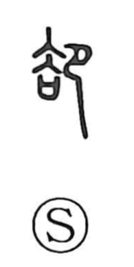

却

Uncategorized
Kun: shirizokeru, kaette | On: kyaku
to reject ・ to drive away ・ to discard ・ to retreat
Explanation
却 is a compound of 去 and 卩. 卩 depicts a kneeling, bowing person. 去, in Shirakawa’s reading, originally means “to throw away”: in ancient ordeal-style trials conducted under the gods, the convicted loser (shown by 大) was cast off together with a ritual covenant vessel whose lid had been removed, because the prayers were found false. This same idea appears in 法, which shows the loser being thrown into water. Placing 卩 beside 去 gives the image of a person bowing before what is being cast off or driven away. From this scene comes the sense of 却: to reject, drive away, cut off, avoid, or refuse, and by extension to retreat.